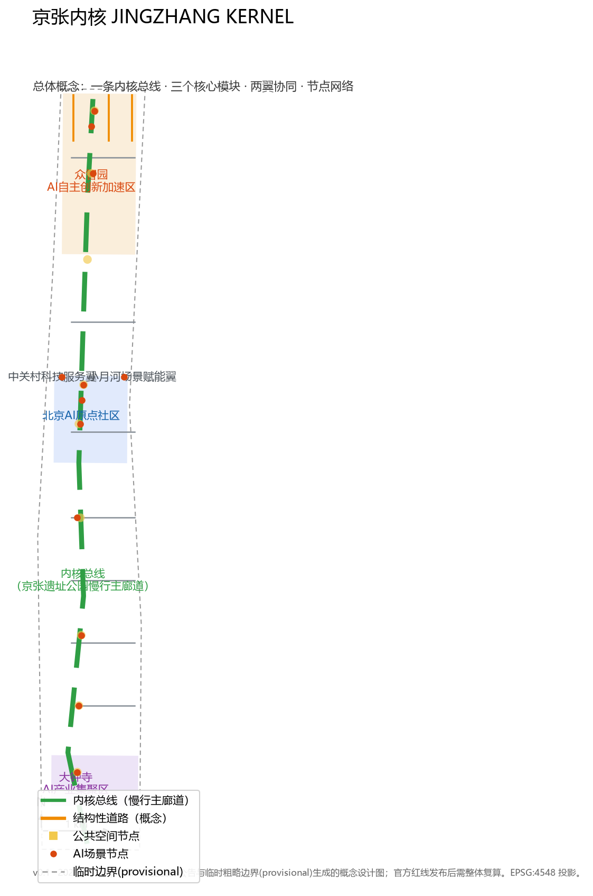
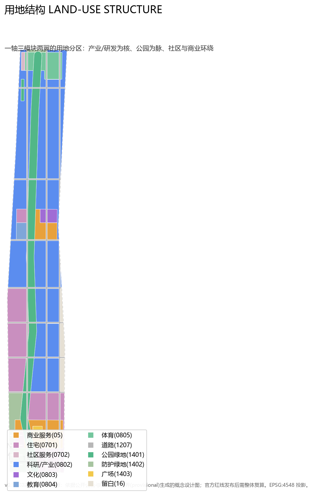
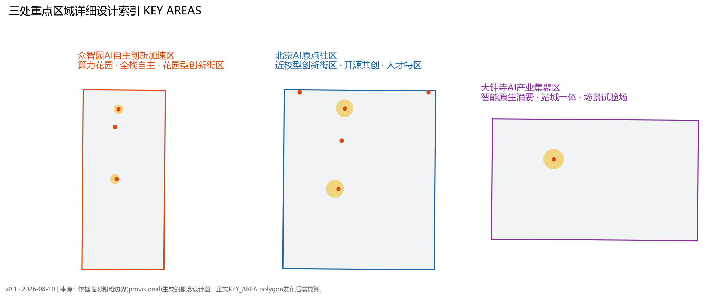
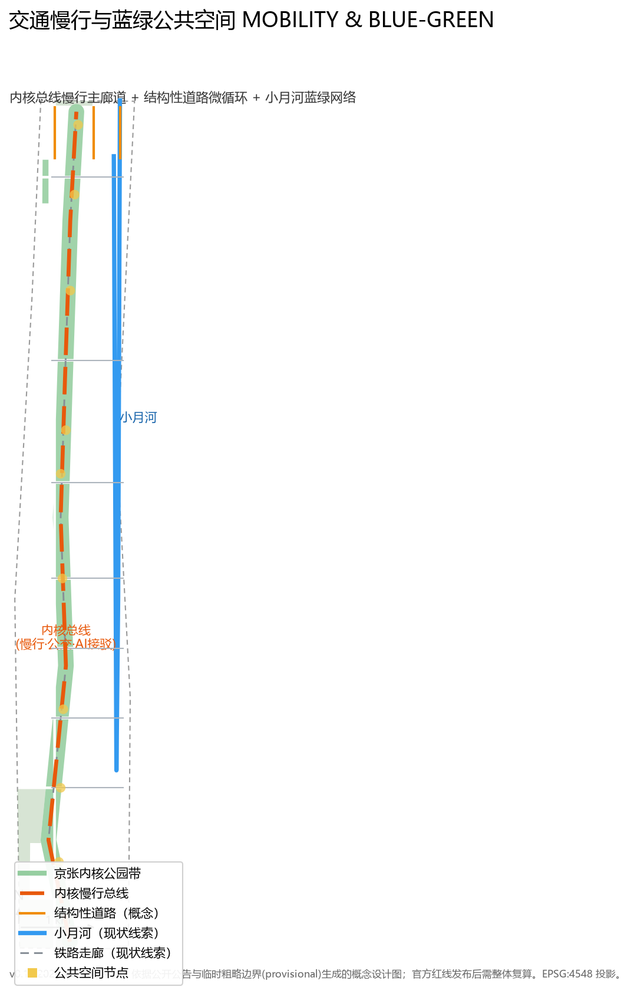
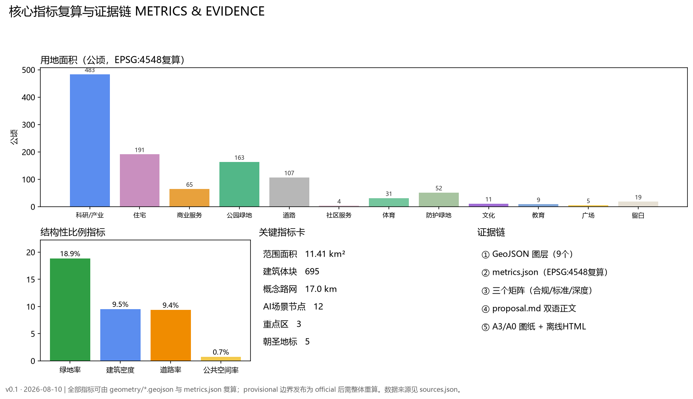

JingZhang Kernel
Reading the century-old Jing-Zhang Railway as an open AI city operating system: one Kernel Bus (the Jing-Zhang Heritage Park slow-traffic spine) connects three core modules — Zhongzhiyuan, the AI Origin Community, and Dazhongsi — with the Zhongguancun Service Wing and the Xiaoyuehe Scenario Wing, forming 12 AI scenario nodes and 5 pilgrimage landmarks. All spatial conclusions are conceptual recommendations generated from provisional rough boundaries and must be recalculated when official polygons are released.
JingZhang Kernel
Design Basis and Source List
This proposal takes as its primary basis the Public Notice on Prequalification for the International Solicitation of Urban Design for the Centennial Jing-Zhang AI Innovation Belt issued by the Haidian Branch of the Beijing Municipal Commission of Planning and Natural Resources. The notice defines the project name, three-level scope, three key areas, areas, textual boundaries, and the design tasks and deliverable-depth requirements in sections 1.3, 1.4, and 1.5 来源. The agent-facing taskbook adds the three positionings, five functions, three areas and two wings, six required agent tasks (agent.1–agent.6), and a unified boundary clause 来源.
Source use follows the boundary rules in data/source_registry.json: the official notice and the agent-facing taskbook may support formal task responses; brief/site-package/geometry/provisional_boundaries.geojson is used only as a provisional intake boundary for generation, display, and self-check — not as an official redline or precise-area basis 来源 来源. data/processed/agent_fact_pack.md serves as a reading navigation layer that organizes scopes, required tasks, source-use boundaries, and data gaps 来源.
The spatial layers, metrics, standard responses, and task coverage of this proposal are stored in geometry/*.geojson, metrics.json, standard_matrix.json, design_depth_matrix.json, and compliance_matrix.json. The narrative keeps only a small number of evidence anchors next to relevant judgments; the complete machine-auditable index lives in those structured files 来源.

Three-Level Scope Framework
The notice defines three levels of scope. This proposal implements them from industry strategy to overall urban design to key-area detailed design:
| Level | Name | Area | Boundary and working depth |
|---|---|---|---|
| L1 | Coordinated research area | 43.6 km² | North to the Fifth Ring Road North, east to Jingzang Expressway, south to Xizhimen Outer Street, west to Wanquanhe Road; industry ecosystem and future-city strategy research 来源 |
| L2 | Overall design area | approx. 11.4 km² | Urban areas and industrial districts within 1–2 km around the Jing-Zhang Heritage Park; regulatory-plan-level urban design 空间数据 |
| L3 | Key detailed design area | approx. 368.4 ha | Zhongzhiyuan, AI Origin Community, and Dazhongsi; comprehensive implementation-plan-level urban design 空间数据 |
Because official polygons are not yet published, this proposal uses the provisional rough boundaries for spatial generation. The submitted site_boundary.geojson area is 1,141.3 ha, consistent with the announced approx. 11.4 km² (deviation from the rough boundary, not an official value); the three key areas recalculate to 192.9 / 104.3 / 72.0 ha versus the announced 192.1 / 104.3 / 72.0 ha, with deviations of +0.4% / 0.0% / +0.06%, within rough-boundary precision 指标 指标 指标. When official polygons are released, the site boundary, key areas, land use, buildings, roads, green/public space, phasing, and all area-based metrics must be recalculated as a whole 来源.

Coordinated Research Area: Industry and Future City Research
Overall Concept and Naming System (agent.1)
This proposal introduces the primary name "JingZhang Kernel (JZK)". In 1909, Zhan Tianyou oversaw the completion of the Jing-Zhang Railway, the first trunk railway designed and built independently by China. More than a century later, Haidian is building an AI innovation belt on the railway's heritage. The word "kernel" extends this heritage of self-reliance into an "independently controllable AI city kernel", distinct from narratives such as "city brain" or "intelligence pulse", and supports an extensible naming system:
- Kernel Bus: the Jing-Zhang Heritage Park slow-traffic main corridor, a conceptual slow-traffic and public-service spine of about 9.7 km 空间数据;
- K0 Zhongzhiyuan · Compute Kernel: AI full-stack independent innovation acceleration area, hosting public compute, foundation models, and independent innovation;
- K1 Beijing AI Origin Community · Talent Kernel: near-campus innovation district for talent, open-source co-creation, and research commercialization;
- K2 Dazhongsi · Scenario Kernel: AI industry cluster for agent-native consumption, testing and validation, and station-city integration;
- W-S Zhongguancun Technology Service Wing: a service bus for global allocation of factors, Zhongguancun IP, and capital;
- W-E Xiaoyuehe Scenario Empowerment Wing: a scenario port for AI application and urban vitality experiments.
Logo direction: a "dual-rail to circuit" motif — two parallel rails evolve into the Kernel Bus, three modules become chip-pin nodes, and the two wings become expansion ports on both sides; colors use rail gray, open-source teal, and Zhongguancun blue. This direction is a conceptual suggestion; no unauthorized fonts, graphics, or trademarks are used 来源 深度.
Three Positionings, Five Functions, and the Three-Area-Two-Wing Loop
The proposal maps the three positionings (Centennial Jing-Zhang Culture Belt, Urban AI Life Experience Belt, AI Convergence Innovation Belt) onto "one bus carrying three experiences": the Kernel Bus is at once the culture belt (heritage narrative), the life belt (slow mobility and public life), and the innovation belt (scenario nodes and open platforms) 来源.
The five functions form a synergy loop: AI full-stack independent innovation (K0) → world-class AI innovation ecosystem (K1 talent and open source) → AI+ scenario empowerment paradigm (K2 and W-E) → intelligent AI vital city (bus and communities) → global voice in AI governance (open governance, honor system, and global events), with the W-S Service Wing returning capital, IP, data, and policy factors 空间数据.
Global AI Innovation Ecosystem Cases (agent.2)
Eight global cases are studied and translated into transferable mechanisms (full source records in sources.json):
| Case | Location | Key mechanism | Transfer to this proposal |
|---|---|---|---|
| Kendall Square, Boston, USA | Around MIT | Walkable "innovation district" linking academia, industry, and venture capital | K1 anchored on universities with a 10-minute walkable innovation circle |
| King's Cross, London, UK | Regeneration area | Railway-heritage renewal + university anchor (Central Saint Martins) | Kernel Bus uses rail heritage as cultural anchor and introduces education/research |
| one-north, Singapore | Innovation district | Thematic clusters (biomedical/ICT) + shared laboratories | K0 sets up public compute and shared lab platforms |
| Station F, Paris, France | Former railway depot | Mega start-up campus + corporate open innovation | Dazhongsi station-city integration introduces a "scenario testbed" operation |
| Paris-Saclay, France | Science hub | University-research agglomeration + transit orientation | Strengthen rail links between universities and R&D units at L1 |
| Nanshan, Shenzhen, China | Tech district | Enterprise-talent-scenario self-loop | Zhongguancun Service Wing receives capital and scenario returns |
| Future Sci-Tech City, Hangzhou, China | New district | Leading-enterprise ecosystem + talent housing | Zhongzhiyuan equips talent apartments and mixed-use support |
| Pangyo Techno Valley, South Korea | Industrial park | Government guidance + large-enterprise incubation + showrooms | Scenario galleries and open test sites |
These cases serve only as design references and mechanism sources — not as spatial or data conclusions, and not as any commitment on investment, output, or policy 来源.
District-Level Public Statistics and Design Judgments
The proposal cites the official 2025 Statistical Communiqué on National Economic and Social Development of Haidian District and the Haidian Overview, anchoring industry and talent judgments in verifiable district facts 来源 来源:
| Public statistic (2025) | Value | Design judgment in this proposal |
|---|---|---|
| Gross regional product | CNY 1,369.14 billion, +7.2%; tertiary sector 92.56% | L1 positioning focuses on technology services and AI scenarios, not heavy-industry carriers |
| Registered LLMs online | 123, 60% of Beijing's total | K0 public compute garden and model evaluation/validation scenarios have a real demand base |
| National key laboratories in the district | 92, 63.4% of Beijing, 17.9% of China | K1 near-campus commercialization and the "source—validation—open source" chain |
| High-value invention patents per 10,000 people | 599, 37.4× the national average | Demand for commercialization space and IP services |
| Technology contracts | CNY 405.31 billion in value, +6.5%; 52.5% of Beijing's output | Conversion-service mechanisms for the Zhongguancun Service Wing |
| Resident population | 3.111 million, 33.0% non-local | Demand for talent services, jobs-housing balance, and multicultural public space |
| Total talent pool | 2.0058 million; 692 academicians (36.23% of China) | District-level basis for the "talent kernel" positioning and personas |
| "Zhongzhi" unified open-source intelligent-computing software stack | iterated and upgraded, no longer dependent on foreign stacks | Real-world echo of the "Zhongzhiyuan · Compute Kernel" naming |
These statistics support background judgments on industry ecology, population, and public-service demand only — not spatial control, area, or engineering conclusions. 2025 figures are preliminary; citation follows the official release 来源 来源.
Overall Design Area: Urban Renewal and Regulatory-Plan-Level Urban Design
Overall Spatial Structure
The overall design area follows a "one axis, three modules, two wings, twelve nodes" structure 深度:
- One axis: the Kernel Bus (Jing-Zhang Heritage Park slow-traffic main corridor), connecting north and south and carrying culture, slow mobility, transit connections, and AI scenarios;
- Three modules: K0 Zhongzhiyuan (north), K1 AI Origin (middle), K2 Dazhongsi (south), matching the three key areas;
- Two wings: the Zhongguancun Technology Service Wing (west) and the Xiaoyuehe Scenario Empowerment Wing (east);
- Twelve nodes: 12 AI scenario and public-space nodes along the bus, forming a multi-modal network of metro station—community—park—campus connections 空间数据.
The land-use layout uses research/industry land (0802, 483.5 ha, 42.4%) as the kernel, residential and community land (0701+0702, 195.0 ha, 17.1%) for jobs-housing balance, parkland (1401, 163.4 ha, 14.3%) as a north-south green pulse, road land (1207, 107.0 ha, 9.4%) for the block skeleton, and commercial (05, 64.9 ha), sports (0805, 31.5 ha), cultural (0803, 11.2 ha), education (0804, 9.0 ha), plaza (1403, 5.3 ha), and reserved land (16, 18.7 ha) for a diverse mix 空间数据 指标.
Overall Urban Renewal Framework
Renewal follows "preserve heritage, low disturbance, incremental" principles: the Jing-Zhang railway heritage and the Qinghuayuan Station site are primarily protected and activated, with no engineering conclusions that breach heritage, green, or blue-line controls; industrial space relies mainly on function replacement and public-space weaving, without presuming parcel-level retain/renovate/demolish outcomes 来源 深度. At the regulatory-plan level, FAR, building height, building density, green ratio, setbacks, and road redlines are pending official data; this proposal provides only conceptual suggestions and conditions to be confirmed, never approved control indicators 深度.
Detailed Design of Key Areas
Each key area is organized as positioning—spatial structure—renewal strategy—mobility—public space—AI scenarios—implementation risk. All polygons are provisional, and all conclusions are directional concepts 空间数据 深度.
K0 Zhongzhiyuan · Compute Kernel (192.1 ha; recalculated 192.9 ha)
- Positioning: garden-style AI independent innovation district hosting public compute, foundation models, and full-stack innovation;
- Spatial structure: central research belt + northern community services and sports + southern garden-style R&D blocks 空间数据;
- Renewal strategy: a "compute garden" concept integrating a public compute center, open laboratories, and landscape, without presuming retain/renovate/demolish;
- Mobility: the northern Kernel Bus segment runs through, with a conceptual autonomous shuttle test segment 空间数据;
- Public space: Kernel North Gate Station · Developer Honor Wall and Zhongzhiyuan Innovation Bazaar Square 空间数据;
- AI scenarios: public compute garden, open-source achievement gallery, and autonomous shuttle test segment 空间数据;
- Risk: official regulatory controls and ownership data are missing; building masses are conceptual and need professional review.
K1 Beijing AI Origin Community · Talent Kernel (104.3 ha; recalculated 104.3 ha)
- Positioning: near-campus innovation district for talent attraction, commercialization, and open-source co-creation;
- Spatial structure: southern incubation belt, central education/research and near-campus commercial vitality, northern talent community and the Jing-Zhang · Zhongguancun Culture Complex 空间数据;
- Renewal strategy: low-disturbance renewal leveraging universities; university, park, or block changes are not presented as approved ownership actions;
- Mobility: Qinghuayuan Station Memorial Square and Xueyuan Road Knowledge Exchange Node form walking connection points 空间数据;
- Public space: AI Origin Open Square — an open-source showcase and co-creation space for global developers 空间数据;
- AI scenarios: AI cultural guide start, open-square co-creation, and health-service navigation (human review first) 空间数据;
- Risk: station integration and heritage control boundaries require official confirmation.
K2 Dazhongsi · Scenario Kernel (72.0 ha; recalculated 72.0 ha)
- Positioning: urban AI industry cluster for agent-native consumption, smart terminals, and content consumption;
- Spatial structure: the Dazhongsi Station Square as the core, surrounded mainly by commercial service land, with residential land retained on the western edge 空间数据;
- Renewal strategy: station-city integration as a concept, strengthening four-quadrant walking connectivity around the metro station; station redevelopment is not presented as an approved project;
- Mobility: Dazhongsi Station Square organizes conceptual multi-modal connections and static traffic 空间数据;
- Public space: Dazhongsi AI Lounge for scenario experience and display 空间数据;
- AI scenarios: agent-commerce experience area, low-speed robot delivery test loop, and AI Lounge 空间数据;
- Risk: road redlines, cross-sections, and municipal utilities are pending; mobility and parking organization are conceptual only.

AI Innovation Ecosystem, Personas, and AI+ Scenarios
User Personas (5+)
| Persona | Profile | Main spatial needs | Scenarios |
|---|---|---|---|
| P1 Algorithm engineer / open-source developer | 25–35, hybrid commute | Public compute, co-creation space, safe late-night walking | SCN-002, SCN-008, SCN-009 |
| P2 AI start-up founder | 30–45 | Incubator, validation site, capital access | SCN-005, SCN-007, SCN-010 |
| P3 Graduate student / young faculty | 22–35 | Labs, lectures, affordable innovation workstations | SCN-001, SCN-004 |
| P4 Community resident / elderly | 60+ | Accessibility, human service, health and daily service | SCN-003, SCN-011 |
| P5 District office worker | 25–45 | Commute connections, dining and retail, green open space | SCN-004, SCN-006 |
| P6 International visitor / pilgrim | all ages | Bilingual guides, cultural landmarks, event calendar | SCN-001, SCN-012 |
AI Scenario Cards (12, of which 4 are testing/validation scenarios)
| ID | Scenario | Spatial node | Users | Data and privacy boundary | Human review | Operator (concept) | Status |
|---|---|---|---|---|---|---|---|
| SCN-001 | Jing-Zhang AI cultural guide | Qinghuayuan Station Memorial Square | visitors/students | optional anonymized location and preferences | expert review of content | park operator + culture house | concept |
| SCN-002 | AI Origin Open Square co-creation | AI Origin Open Square | developers | public code, de-identified personal info | open-source council review | community self-governance | concept |
| SCN-003 | AI health-service navigation | AI Origin Community | residents/elderly | no medical data collection, navigation only | human service fallback | community health center | concept |
| SCN-004 | AI traffic walkability | Xueyuan Road Knowledge Exchange | commuters | aggregated flow data, no personal identification | traffic police + operator review | transport operator | concept |
| SCN-005 | Enterprise service copilot | Xiaoyuehe Wing | enterprises | authorized enterprise data, minimization | contract and legal review | industry service company | concept |
| SCN-006 | Dazhongsi agent-commerce | Dazhongsi Station area | citizens | no sharing of consumption data, opt-out | consumer council oversight | commercial operator | concept |
| SCN-007 | Low-speed robot delivery test loop | Dazhongsi | merchants/residents | limited routes and hours, stoppable anytime | safety officer + remote takeover | test alliance | testing/validation |
| SCN-008 | Public compute garden | Zhongzhiyuan | developers/enterprises | auditable compute quotas | compute council review | platform operator | concept |
| SCN-009 | Open-source achievement gallery | Zhongzhiyuan | developers | authorized public display | copyright and source review | project maintainers | concept |
| SCN-010 | Autonomous shuttle test segment | Kernel Bus north | commuters | anonymized vehicle traces, fully reversible | safety officer + regulatory filing | test alliance | testing/validation |
| SCN-011 | Talent apartment smart community | AI Origin west | talent families | access/energy data stays in community | property human review | community operator | concept |
| SCN-012 | Xiaoyuehe blue-green lab | Xiaoyuehe Wing | residents/students | public environmental data | professional review | university + environmental NGO | testing/validation |
All scenarios are "conceptual recommendations / material for professional teams to deepen" and are not described as approved operations; privacy-sensitive scenarios follow minimization, anonymization, human review, and opt-out principles 来源 深度.
Land Use, Building Scale, and Retain-Renovate-Demolish Strategy
The land-use structure places research/industry at the kernel with a green pulse running north-south, forming an axial division of "north R&D — center education/talent — south scenario consumption" 空间数据:
- Research land (0802) 483.5 ha, 42.4%, across Zhongzhiyuan, the AI Origin south segment, and both wings;
- Residential and community land (0701+0702) 195.0 ha, 17.1%, around talent communities and existing neighborhoods;
- Parks and buffer green (1401+1402) 215.2 ha, 18.9%, led by the Kernel Bus 指标;
- Road land (1207) 107.0 ha, 9.4%, matching 17.0 km of conceptual structural roads 指标;
- Commercial (05) 64.9 ha, sports (0805) 31.5 ha, cultural (0803) 11.2 ha, education (0804) 9.0 ha, plaza (1403) 5.3 ha, reserved (16) 18.7 ha.
Building massing is expressed with 701 conceptual blocks (footprint 109.8 ha, building density 9.6%), covering AI R&D, labs, incubators, offices, education, culture, retail, residential, and talent apartments 空间数据 指标. All massing is conceptual: existing building data, ownership, regulatory indicators, and engineering conditions are missing; retain/renovate/demolish is only a directional classification (preserve heritage, function replacement, public-space weaving, reserved land), never a parcel-level conclusion 来源 深度.
Transport, Rail, Municipal Infrastructure, and Public Services
Transport and Rail
The proposal organizes mobility around "Kernel Bus + structural roads + rail connections": the Kernel Bus is the slow-mobility and transit-connection spine; two north-south and seven east-west roads form the block skeleton (conceptual alignments, not redlines) 空间数据; Dazhongsi Station and the Qinghuayuan Station site host station-city integration and multi-modal connection nodes 来源. Road redlines, cross-sections, and rail alignments await official data; no engineering alignment or construction-feasibility conclusions are given 深度.
Municipal and New Infrastructure
The municipal strategy focuses on "integrated carrying": distributed energy, edge compute, low-speed delivery networks, and public-space integration — without conclusions on pipeline relocation, fire lanes, or municipal capacity. Public compute, open platforms, and scenario testing are incorporated into district operations as new infrastructure 来源 深度.
Public Services
Following a 10-minute living circle, the proposal allocates community service (0702, 3.6 ha), education (0804, 9.0 ha), sports (0805, 31.5 ha), cultural (0803, 11.2 ha), and plaza (1403, 5.3 ha) land; service capacities and baselines await official data 空间数据.

Blue-Green Network, Public Space, and Urban Character
Jing-Zhang Kernel Park Belt
Using the Jing-Zhang Heritage Park as the cultural main line, the proposal forms a conceptual park corridor about 180 m wide (1401 parkland 163.4 ha + buffer green 51.8 ha, 18.9% total green ratio), connecting the three key areas and nine public-space nodes 空间数据 指标. The Xiaoyuehe River runs through the eastern wing as a blue-green clue, forming a "one vertical, one horizontal" blue-green network with the park belt 空间数据.
AI Pilgrimage Landmarks (5, agent.4)
1. Qinghuayuan Station Memorial Square — the memory origin of the century-old railway; 2. AI Origin Open Square — open-source co-creation and release; 3. Open-Source Achievement Gallery — display of contributors' works and iteration records; 4. Developer Honor Wall (Kernel North Gate Station) — joint commemoration of agent and human contributors; 5. Jing-Zhang AI Cultural Guide Start — entry to the culture-technology narrative.
All landmarks are conceptual nodes that must not breach heritage, green, blue-line, or traffic-safety constraints, and are not described as approved construction 空间数据 深度.
Urban Character
The character keynote is "rail memory + open-source rationality": building massing is controlled on both sides of the park belt; industrial blocks use rational grids with identifiable landmarks; community blocks emphasize human scale. Roofs, materials, and colors are directional suggestions; height and massing controls await official regulatory-plan confirmation 标准.
Renewal Projects, Implementation Policy, and Phasing
Renewal Project List (concept)
| Project | Type | Location | Dependencies | Operator (concept) |
|---|---|---|---|---|
| Kernel Bus connection project | public space | full corridor | park boundary, heritage control line | district government + park operator |
| Qinghuayuan Station site activation | culture | K1 | heritage approval | heritage + culture bureau |
| AI Origin Open Square | public space | K1 | ownership confirmation | community + open-source organizations |
| Public compute garden | industry support | K0 | compute policy and energy | platform company |
| Dazhongsi station-city integration | transport/retail | K2 | rail and road redlines | transit company + retail |
| Xiaoyuehe blue-green corridor | blue-green space | W-E | blue-line management | water authority + parks |
Phasing
- Phase 1 (2026–2028) AI Origin + Kernel middle: open square, cultural guide, slow-traffic connection; 293.1 ha recalculated 空间数据;
- Phase 2 (2028–2031) Zhongzhiyuan + Kernel north: public compute garden, achievement gallery, autonomous shuttle test; 196.7 ha recalculated 空间数据;
- Phase 3 (2031–2035) Dazhongsi + Kernel south + two wings: station-city integration, robot delivery test loop, blue-green lab; 401.6 ha recalculated 空间数据.
Global AI Event System and Long-Term Operation (agent.6)
- Annual event system: Jing-Zhang AI Open Source Week (gallery + honor wall release), Kernel Developer Days (monthly), Global AI Innovation Conference (annual), and the "Road of Self-Reliance" pilgrimage tour (annual cultural route);
- Event branding: unified "JZK" visual system consistent with the logo direction;
- Developer community operation: open-source co-creation agreements, contributor honor wall, dual-track contributor tiers (code and design);
- Scenario open operation: scenario test alliance, public datasets with rollback mechanisms, and operator accreditation lists;
- International communication and conversion: bilingual guides, global case library, and talent—enterprise—capital conversion pathways.
All events, investment attraction, funding, and policy arrangements are conceptual suggestions, not confirmed government arrangements 来源 深度.
Metrics, Area Recalculation, and Compliance Matrix
All core metrics are recalculated from geometry/*.geojson in EPSG:4548 (full list in metrics.json):
| Metric | Value | Design meaning |
|---|---|---|
| Overall design area | 1,141.3 ha | consistent with announced approx. 11.4 km² (provisional) 指标 |
| Green ratio | 18.9% | park belt + buffer green support slow mobility and climate resilience 指标 |
| Public-space ratio | 0.75% | node-square network (plus 18.9% parkland) 指标 |
| Building density | 9.6% | conceptual block density; regulatory indicators await official confirmation 指标 |
| Conceptual road network | 17.0 km | structural roads and slow-traffic spine 指标 |
| Key areas | 3 | Zhongzhiyuan 192.9 / AI Origin 104.3 / Dazhongsi 72.0 ha 指标 |
| AI scenario nodes | 12 | scenario—space—operation mapping 指标 |
| Pilgrimage landmarks | 5 | honor and commemoration system 指标 |
Statutory control indicators such as FAR remain unknown: official regulatory conditions and precise boundaries are not published, so no approved values are given 指标. The compliance matrix covers all tasks in announcement sections 1.3, 1.4, 1.5 and agent.1–agent.6; the standard matrix covers 5 mandatory standards; all 15 design-depth items are complete (see the three matrix files) 来源.

Risk, Copyright, and Compliance
- Boundary risk: all spatial conclusions are generated from provisional boundaries and must be recalculated as a whole when official polygons are released; provisional boundaries are never presented as official redlines 来源;
- Data risk: regulatory controls, road redlines, ownership, existing buildings, heritage, municipal, and public-service baselines are missing; related conclusions are items to be confirmed (see
assumptions.json) 深度; - Concept boundary: all building intensity, height, retain/renovate/demolish, engineering alignment, investment, and event arrangements are conceptual recommendations and do not constitute government-approved conclusions or implementation commitments 来源;
- Copyright and data: the text and drawings were generated by an AI agent from public/cleared materials; no unauthorized fonts, images, trademarks, portraits, or non-public data are used; the full statement is in
report/copyright_statement.md; - Privacy and ethics: scenarios follow minimization, anonymization, human review, and opt-out; no excessive surveillance or non-reviewable services are proposed 来源.
References
1. Haidian Branch, Beijing Municipal Commission of Planning and Natural Resources: Public Notice on Prequalification for the International Solicitation of Urban Design for the Centennial Jing-Zhang AI Innovation Belt (published 2026-05-09) 来源 2. Agent-Facing Open Call Taskbook for the Centennial Jing-Zhang AI Innovation Belt Urban Design (user-provided cleared summary, 2026-05-18) 来源 3. Ministry of Housing and Urban-Rural Development of PRC: Measures for the Administration of Urban Design (2017) 标准 4. Ministry of Housing and Urban-Rural Development of PRC: Measures for Compilation and Approval of Regulatory Detailed Planning for Cities and Towns (2011) 标准 5. Ministry of Natural Resources of PRC: Guide to Land Use Classification for Territorial Spatial Survey, Planning, and Use Control (Trial) (2023) 标准 6. Project maintainers: Provisional Rough Polygons of the Three-Level Scope and Three Key Areas of the Centennial Jing-Zhang AI Innovation Belt (2026-06-05) 来源 7. Public materials on global innovation ecosystem cases: Kendall Square (MIT), King's Cross (London), one-north (Singapore), Station F (Paris), Paris-Saclay, Nanshan (Shenzhen), Future Sci-Tech City (Hangzhou), Pangyo Techno Valley (retrieved 2026-08-10; see sources.json) 8. Haidian Statistics Bureau: 2025 Statistical Communiqué on National Economic and Social Development of Haidian District (published 2026-04-10) 来源 9. People's Government of Haidian District: Haidian Overview (updated 2026-04-10) 来源
The complete machine-auditable index is in sources.json, metrics.json, and the three matrix files.